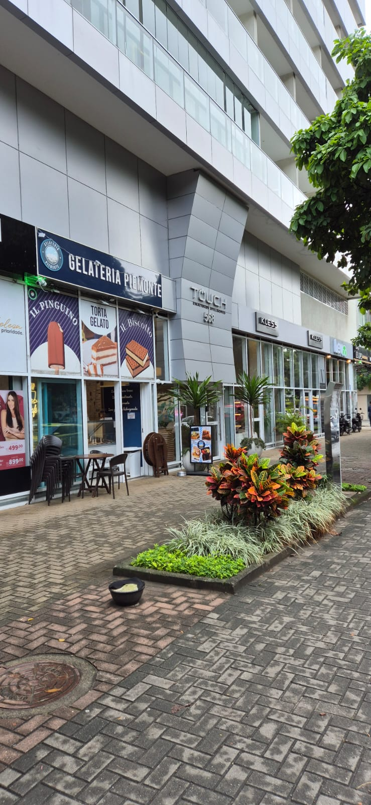

Mariana Veiga
Nutrição clínica e esportiva
Mariana Veiga
Nutrição clínica e esportiva
Presencial no consultório ou online, no seu ritmo.
O formato muda; o cuidado, não. Escolha o que couber melhor na sua rotina: em qualquer um deles o plano é individual e o acompanhamento é contínuo.
Consultório particular
Sala própria no Jardim Botânico, com estrutura completa para avaliação clínica, física e comportamental. É onde dá para medir, conversar sem pressa e sair com o plano já explicado.
- Avaliação antropométrica completa
- Consulta inicial de 60 minutos
- Reavaliações a cada 30, 60 ou 90 dias
Consulta online
Acompanhamento por videochamada, para quem está fora do Rio ou prefere a praticidade de casa. A profundidade é a mesma da consulta presencial.
- Orientação prévia para medidas e registros
- Horários flexíveis, sem deslocamento
Acompanhamento por aplicativo
A dieta é entregue por um aplicativo interativo, que fica com você entre uma consulta e outra.
- Registro de refeições e água, receitas e listas de substituição
- Orientações ajustadas ao longo do mês
O que está incluído em cada encontro.
Primeira consulta
Reavaliação
Presencial e online seguem a mesma estrutura. Se você já tem exames recentes, leve ou envie antes da consulta: eles entram na avaliação do primeiro dia.
Jardim Botânico, Rio de Janeiro.
Jardim Botânico, Rio de Janeiro - RJ
22461-000
Sábados (eventual), 08h às 14h
Domingo, fechado


Qual formato combina com a sua rotina?
Me diga se prefere presencial ou online e eu retorno com os horários.